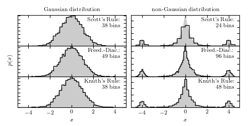

Selection of Histogram bin size¶
This shows an example of selecting histogram bin size using Scott’s rule, the Freedman-Diaconis rule, and Knuth’s rule.
Optimization terminated successfully.
Current function value: -2984.022998
Iterations: 19
Function evaluations: 50
Optimization terminated successfully.
Current function value: -4651.454792
Iterations: 18
Function evaluations: 51
# Author: Jake VanderPlas <vanderplas@astro.washington.edu>
# License: BSD
# The figure produced by this code is published in the textbook
# "Statistics, Data Mining, and Machine Learning in Astronomy" (2013)
# For more information, see http://astroML.github.com
import numpy as np
from matplotlib import pyplot as plt
from scipy import stats
from astroML.plotting import hist
def plot_labeled_histogram(style, data, name,
x, pdf_true, ax=None,
hide_x=False,
hide_y=False):
if ax is not None:
ax = plt.axes(ax)
counts, bins, patches = hist(data, bins=style, ax=ax,
color='k', histtype='step', normed=True)
ax.text(0.99, 0.95, '%s:\n%i bins' % (name, len(counts)),
transform=ax.transAxes,
ha='right', va='top', fontsize=12)
ax.fill(x, pdf_true, '-', color='#CCCCCC', zorder=0)
if hide_x:
ax.xaxis.set_major_formatter(plt.NullFormatter())
if hide_y:
ax.yaxis.set_major_formatter(plt.NullFormatter())
ax.set_xlim(-5, 5)
return ax
#------------------------------------------------------------
# Set up distributions:
Npts = 5000
np.random.seed(0)
x = np.linspace(-6, 6, 1000)
# Gaussian distribution
data_G = stats.norm(0, 1).rvs(Npts)
pdf_G = stats.norm(0, 1).pdf(x)
# Non-Gaussian distribution
distributions = [stats.laplace(0, 0.4),
stats.norm(-4.0, 0.2),
stats.norm(4.0, 0.2)]
weights = np.array([0.8, 0.1, 0.1])
weights /= weights.sum()
data_NG = np.hstack(d.rvs(int(w * Npts))
for (d, w) in zip(distributions, weights))
pdf_NG = sum(w * d.pdf(x)
for (d, w) in zip(distributions, weights))
#------------------------------------------------------------
# Plot results
fig = plt.figure(figsize=(10, 5))
fig.subplots_adjust(hspace=0, left=0.05, right=0.95, wspace=0.05)
ax = [fig.add_subplot(3, 2, i + 1) for i in range(6)]
# first column: Gaussian distribution
plot_labeled_histogram('scotts', data_G, 'Scott\'s Rule', x, pdf_G,
ax=ax[0], hide_x=True, hide_y=True)
plot_labeled_histogram('freedman', data_G, 'Freedman-Diaconis', x, pdf_G,
ax=ax[2], hide_x=True, hide_y=True)
plot_labeled_histogram('knuth', data_G, 'Knuth\'s Rule', x, pdf_G,
ax=ax[4], hide_x=False, hide_y=True)
ax[0].set_title('Gaussian distribution')
ax[2].set_ylabel('P(x)')
ax[4].set_xlabel('x')
# second column: non-gaussian distribution
plot_labeled_histogram('scotts', data_NG, 'Scott\'s Rule', x, pdf_NG,
ax=ax[1], hide_x=True, hide_y=True)
plot_labeled_histogram('freedman', data_NG, 'Freedman-Diaconis', x, pdf_NG,
ax=ax[3], hide_x=True, hide_y=True)
plot_labeled_histogram('knuth', data_NG, 'Knuth\'s Rule', x, pdf_NG,
ax=ax[5], hide_x=False, hide_y=True)
ax[1].set_title('non-Gaussian distribution')
ax[5].set_xlabel('x')
plt.show()